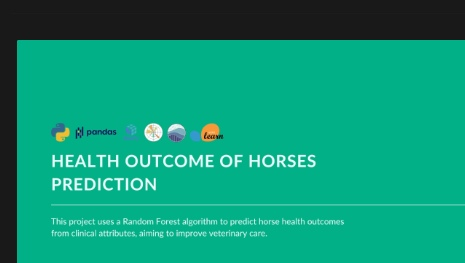
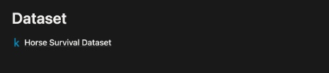

Health Outcomes of Horses Prediction

Title
Health Outcomes of Horses Prediction 🐴
Description
This project aimed to predict the health outcomes of horses based on various attributes such as surgery, age, rectal temperature, and more. The project began with a comprehensive exploratory data analysis, where data distributions, correlations, and patterns were identified.
Key insights included the class imbalance in the target outcomes and potential correlations between features. During data preprocessing, missing values were handled, and the target variable was encoded to facilitate modeling.
The Random Forest algorithm was employed for training, and its performance was validated using the F1 score. Finally, predictions were generated for a test set, which were then prepared for submission.
Skills
- Data cleaning and pre-processing
- Exploratory Data Analysis (EDA)
- Descriptive statistics
- Correlation analysis
- Data visualization: histogram, count plots, pair plots, box plots, heatmaps
- Feature engineering
- Model selection and training using Random Forest
- Model evaluation using F1-score
Tools
Dataset
⌁ Horse Survival Dataset
Notebook

Explore and run machine learning code with Kaggle Notebooks using the horse health dataset.
Kaggle notebookResults
- Identified class imbalances in the target outcomes, which might affect model performance.
- Observed potential correlations between features, which were exploited for feature engineering.
- Achieved an 89% F1 score as evaluated on the validation set.
- Generated predictions for the test dataset and prepared them for submission.